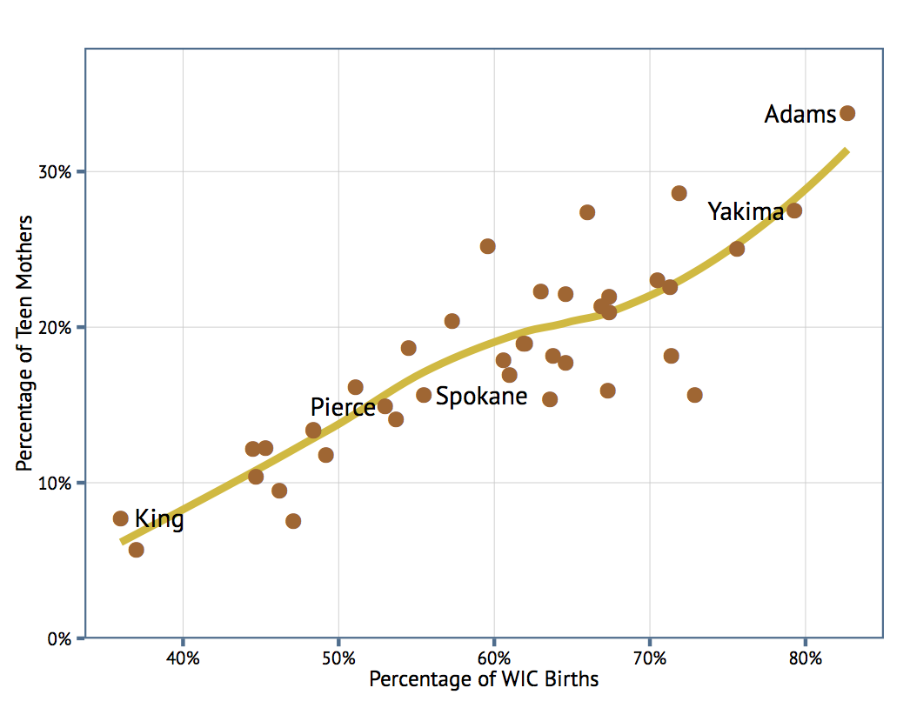

Acknowledgements
Many thanks to the following for the data used in this presentation.

Presentation Overview
How does Washington compare to the rest of the country?
How do the counties in Washington compare to one another?
Are there differences by age, race and poverty level?

4th Grade Reading Achievement Levels
Percentage of fourth grade public school students reading achievement levels, at or above proficiency, as measured and defined by the National Assessment of Education Progress (NAEP) reading test. Washington ranks 10th highest for reading achievement and is tied with Pennsylvania.

Washington County Comparison
Washington County Comparison
WA Entries into Out-of-Home Care by Age
WA Outcomes by Age Entering Care in 2009
Permanency outcomes vary drastically by age. Reunification is always the most common outcome, but while adolescents are quick to reunify, their adoption rate is low. However, young children are adopted quickly--especially infants.

Percentage of Births to Teen Mothers by Percentage of WIC Births by County

It’s no surprise that the percentage of births in a county eligible for WIC---really the percentage of births to low-income mothers---is strongly correlated with births to teenage mothers.
Source: DOH
Thank You
To learn more about Partners for Our Children, please visit our website or find us on social media.